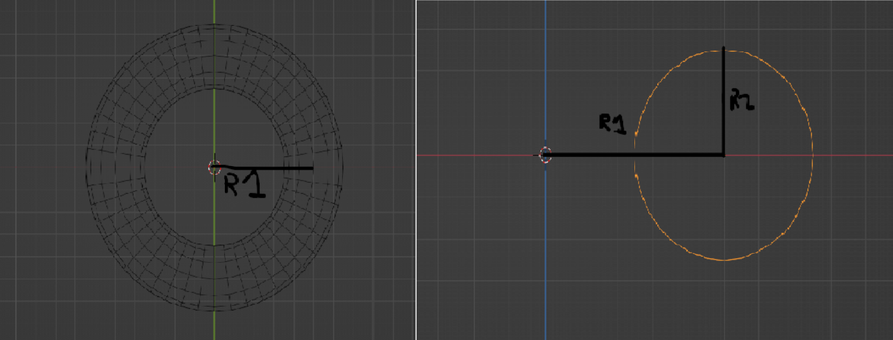
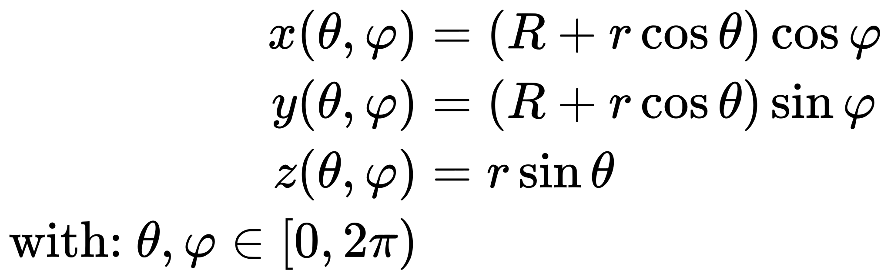

Remaking Donut.c
This is how I made my version of donut.c.
Index:
Import the necessary libs and initialize the hyperparameters of the donut.
R1 is the radius of the main circle while R2 is the radius of the tube:

output is the "screen" where the donut will be drawn.
# Initialize variables
import math
from termcolor import colored
SCREEN_HEIGHT, SCREEN_WIDTH = 200, 200
R1 = 50
R2 = 25
output = []
Now we define the function that lets us clear/reset the "screen":
def reset_output():
"""make output array an empty 2d matrix with dimensions of the screen """
output.clear()
for row in range(SCREEN_HEIGHT):
_ = []
charNum = 0
for pix in range(SCREEN_WIDTH):
_.append(' ')
output.append(_)
This goes through each element of a 2d matrix and makes it ' ' (two blank spaces).
The function used to render our output array to the screen:
def render():
print('\x1b[H')
for row in range(SCREEN_HEIGHT):
for colm in range(SCREEN_WIDTH):
print(output[row][colm], end='')
print()
\x1b[H sends cursor to cursor home position. Then it goes through each element in the row and prints it without a space/newline at the end.
After reaching the end of the row, it starts a newline by doing print().
Now for the real stuff. The function that actually creates, rotates and shades the torus (donut):
def compute_frame(Rx, Ry, Rz):
# First we precompute the sins and coses of the angles the object is gonna be rotated by
cosRx = math.cos(Rx)
sinRx = math.sin(Rx)
sinRy = math.sin(Ry)
cosRy = math.cos(Ry)
sinRz = math.sin(Rz)
cosRz = math.cos(Rz)
theta = 0 # theta is used to calculate each point on the circle with angle theta relative to the center
while theta <= 2 * math.pi:
# precompute the sin and cos of theta
costheta = math.cos(theta)
sintheta = math.sin(theta)
phi = 0 # phi is used to calculate each point on the another circle perpendicular to the main with angle phi
# with the origin being the calculated point from theta
while phi <= 2 * math.pi:
cosphi = math.cos(phi)
sinphi = math.sin(phi)
# Magic formula for torus
x = (R1 + R2 * costheta) * cosphi
y = (R1 + R2 * costheta) * sinphi
z = R2 * sintheta
# Now it's time to rotate each point that we have gotten around an axis by multiplying by the rotation
# matrices
# Rotation around x axis:
# x' = x
# y' = y * cos(Rx) - z * sin(Rx)
# z' = y * sin(Rx) + z * cos(Rx)
x_Rx = x
y_Rx = y * cosRx - z * sinRx
z_Rx = y * sinRx - z * cosRx
# Rotation around y axis:
# x'' = x' * cos(Ry) + z' * sin(Ry)
# y'' = y'
# z'' = -x' * sin(Ry) + z' * cos(Ry)
x_Rxy = x_Rx * cosRy + z_Rx * sinRy
y_Rxy = y_Rx
z_Rxy = -x_Rx * sinRy + z_Rx * cosRy
# Rotation around z axis:
# x''' = x'' * cos(Rz) - y'' * sin(Rz)
# y''' = x'' * sin(Rz) + y'' * cos(Rz)
# z''' = z''
rot_x = x_Rxy * cosRz - y_Rxy * sinRz
rot_y = x_Rxy * sinRz + y_Rxy * cosRz
rot_z = z_Rxy
# Calculate the location of the point on screen
px = int(rot_x + SCREEN_WIDTH / 2)
py = int(rot_y + SCREEN_HEIGHT / 2)
if rot_z >= 0:
output[px][py] = '@ '
else:
output[px][py] = colored('$ ', 'red')
phi += 0.07
theta += 0.07
render()
How about we first break it down?
def compute_frame(Rx, Ry, Rz):
cosRx = math.cos(Rx)
sinRx = math.sin(Rx)
sinRy = math.sin(Ry)
cosRy = math.cos(Ry)
sinRz = math.sin(Rz)
cosRz = math.cos(Rz)
after the defining the function with inputs (Rx, Ry, Rz) for the rotation in its respective axis, we precompute their cos and sin values as to not do unnecessary repetitions of calculations.
To actually draw the donut we use the holy parameterized equations of a torus:

here, R is the distance from the center of the tube to the center of the torus i.e our R1 value,
r is the radius of the tube i.e our R2 value.
theta = 0 # theta is used to calculate each point on the circle with angle theta relative to the center
while theta <= 2 * math.pi:
# precompute the sin and cos of theta
costheta = math.cos(theta)
sintheta = math.sin(theta)
phi = 0 # phi is used to calculate each point on the another circle perpendicular to the main with angle phi
# with the origin being the calculated point from theta
while phi <= 2 * math.pi:
cosphi = math.cos(phi)
sinphi = math.sin(phi)
# Magic formula for torus
x = (R1 + R2 * costheta) * cosphi
y = (R1 + R2 * costheta) * sinphi
z = R2 * sintheta
As mentioned above, θ and φ vary from 0 to 2π, hence the loops. Inside the definition of the loops we precompute their sin/cos.
Finally we use the parameterized equations to find the point on the surface of the torus. (x, y, z) is the 3d position of the point on the torus.
Now for the last piece of the function; the rotation!
We will use the 3d rotation matrices to rotate the point we just got from above in all 3 dimentions.

by doing matrix multiplication we can get:
[x`, y`, z`] = [x, y, z] × [(the rotation matrix of the axis)] the rotation matrices for each axis is as follows:
Rotation around x axis:
x` = x
y` = y * cos(Rx) - z * sin(Rx)
z` = y * sin(Rx) + z * cos(Rx)
Rotation around y axis:
x`` = x` * cos(Ry) + z` * sin(Ry)
y`` = y`
z`` = -x` * sin(Ry) + z` * cos(Ry)
Rotation around z axis:
x``` = x`` * cos(Rz) - y`` * sin(Rz)
y``` = x`` * sin(Rz) + y`` * cos(Rz)
z``` = z``
by chaining the results together like this we can have the rotation done in all the axises. here is the code:
# Now it's time to rotate each point that we have gotten around an axis by multiplying by the rotation matrices
x_Rx = x
y_Rx = y * cosRx - z * sinRx
z_Rx = y * sinRx - z * cosRx
x_Rxy = x_Rx * cosRy + z_Rx * sinRy
y_Rxy = y_Rx
z_Rxy = -x_Rx * sinRy + z_Rx * cosRy
rot_x = x_Rxy * cosRz - y_Rxy * sinRz
rot_y = x_Rxy * sinRz + y_Rxy * cosRz
rot_z = z_Rxy
The hard part is now done. All thats left is to calculate their luminance and project them too offset the points so their positions correspond to a valid index in the output array.
# Calculate the location of the point on screen
px = int(rot_x + SCREEN_WIDTH / 2)
py = int(rot_y + SCREEN_HEIGHT / 2)
min_z = -(R1 + R2)
max_z = R1 + R2
luminance = ((0 - 11) * ((rot_z - min_z)/(max_z - min_z))) + 11 # normalize z between 0 and 11
Here the "projection" is very simple which is just shifting the point by half of the screen width
toward the right then convert it to an int. But if we pay our attention to luminance which is basically the proxmity of the point to the screen, what we are doing here is normalizing the z value between 0 and 11 (the indices of the characters we use to show luminance). See here as to how I have done it.
It's basically a value between 0 and 11 for each value between (R1 + R2) and -(R1 + R2) with greater the value being lesser the z value i.e. more proximity.
We then round the luminance to an int and write it at its corresponding px, py position in the array and render it to the screen.
if luminance > z_buffer[px][py]: # inside the phi while loop
z_buffer[px][py] = luminance
output[px][py] = colored(r'.,-~:;=!*#$@'[round(luminance)] + ' ', "red")
if z < 0: # i.e further from us
output[px][py] = colored(r'.,-~:;=!*#$@'[round(luminance)])
phi += 0.07 # inside the phi while loop
theta += 0.07 # inside theta while loop
render() # inside the function